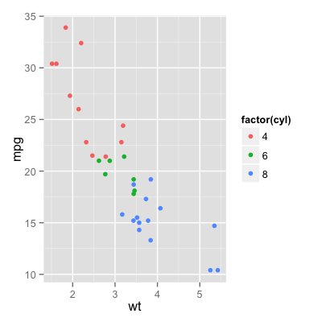
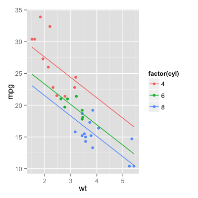
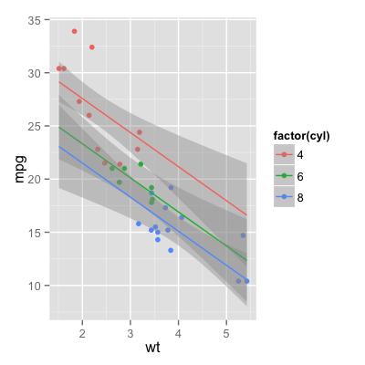

geom_smooth(mapping = NULL, data = NULL, stat = "smooth", position = "identity", ...)
aes or aes_string. Only
needs to be set at the layer level if you are overriding
the plot defaults.layer. This can include aesthetics whose
values you want to set, not map. See layer
for more details.Add a smoothed conditional mean.
geom_smooth understands the following aesthetics (required aesthetics are in bold):
x
y
alpha
colour
fill
linetype
size
weight
# See stat_smooth for examples of using built in model fitting # if you need some more flexible, this example shows you how to # plot the fits from any model of your choosing qplot(wt, mpg, data=mtcars, colour=factor(cyl))
model <- lm(mpg ~ wt + factor(cyl), data=mtcars) grid <- with(mtcars, expand.grid( wt = seq(min(wt), max(wt), length = 20), cyl = levels(factor(cyl)) )) grid$mpg <- stats::predict(model, newdata=grid) qplot(wt, mpg, data=mtcars, colour=factor(cyl)) + geom_line(data=grid)
# or with standard errors err <- stats::predict(model, newdata=grid, se = TRUE) grid$ucl <- err$fit + 1.96 * err$se.fit grid$lcl <- err$fit - 1.96 * err$se.fit qplot(wt, mpg, data=mtcars, colour=factor(cyl)) + geom_smooth(aes(ymin = lcl, ymax = ucl), data=grid, stat="identity")
stat_smooth see that documentation for more
options to control the underlying statistical
transformation.